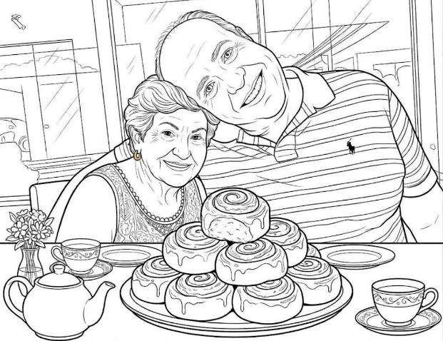

Fatias Húngaras da Mãe para o Fábio
“A felicidade não se compra, ela se vive nos pequenos momentos, nos abraços sinceros e na alegria de estarmos juntos. Porque, no fim das contas, o maior presente da vida é ter uns aos outros.”

Fábio guarda na memória o cheirinho irresistível das fatias húngaras que sua mãe preparava em grandes quantidades nas festas de final de ano. A casa ficava perfumada com aquele aroma doce, enquanto Zelinda se dedicava a preparar tantas fatias para oferecer às crianças que passavam à porta desejando boas festas e a todos os visitantes. Mais do que um doce,
aquelas fatias eram um gesto de generosidade, carinho e amor, que até hoje adoça as lembranças da infância de Fábio.
Preparando a fermentação com a Esponja
Prepare 30 minutos antes de fazer a massa.
Ingredientes
100 g de farinha de trigo 10 g de fermento em pó
100 g de água em temperatura ambiente
Preparo
Misture a farinha, o fermento e a água até formar uma mistura homogênea. Deixe descansar por 30 minutos antes de preparar a massa.
Massa
Ingredientes
420 g de farinha de trigo 60 g de açúcar
100 g de leite gelado 1 ovo
Toda a esponja preparada anteriormente 8 g de sal
130 g de manteiga em temperatura ambiente
Atenção: não acrescente farinha além da quantidade indicada. A massa pode ficar pegajosa durante o preparo, mas deve ser trabalhada até atingir o ponto adequado.
Modo de preparo
Prepare e sove a massa
Siga a ordem indicada dos ingredientes. Misture a farinha, o açúcar, o leite gelado, o ovo e a esponja. Acrescente o sal e, por último, a manteiga em temperatura ambiente.
Sove bem até desenvolver o glúten e obter uma massa elástica. Se necessário, bata a massa contra a bancada durante a sova. Para verificar o
ponto, retire um pequeno pedaço e abra delicadamente com os dedos. Se conseguir esticá-lo sem rasgar, formando uma película fina, a massa estará bem desenvolvida.
Abra e recheie
Em uma superfície de trabalho, abra a massa formando um retângulo de aproximadamente 30 cm, com cerca de 0,5 cm de espessura.
Prepare o recheio misturando manteiga derretida, açúcar e coco ralado.
Espalhe sobre a massa aberta, distribuindo de maneira uniforme.
Modele as fatias
Enrole a massa como um rocambole, apertando delicadamente para formar um rolo uniforme. Corte em fatias e acomode-as com o corte voltado para cima em uma assadeira untada, deixando espaço entre elas para crescerem.
Deixe fermentar
Cubra e deixe fermentar por aproximadamente 40 minutos, ou até que as fatias cresçam visivelmente.
Leve ao forno preaquecido e asse até ficarem douradas.
Prepare a calda
Misture 2 xícaras de leite quente com 1 xícara de açúcar, mexendo até dissolver.
Quando as fatias estiverem douradas, retire-as do forno e despeje a calda sobre elas, distribuindo bem para que fiquem úmidas e saborosas.